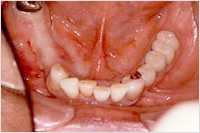
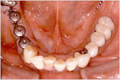
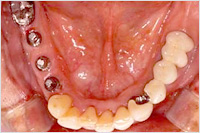
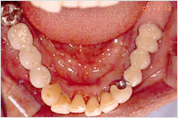
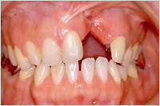
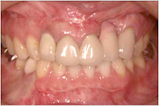

インプラント
インプラントとは
インプラント治療とは、歯を失ってしまった部位の歯槽骨にインプラント（人工歯根）を埋め込み その上に人工歯を被せることで、本来の「歯」の機能を取り戻す治療のことです。 歯科医療における最先端治療であり、本来の歯の審美性と機能性を取り戻せるため"第二の永久歯"として注目されています。
インプラントの素材として用いられているのは、「チタン」という硬質の金属です。 チタンは人間の骨との生体親和性が高い物質のため、埋め込むと歯槽骨と結合します。 そのため、違和感なく自分の歯と同じように噛む力が回復するのです。
また、最近ではインプラント治療をより安全・適切に行うために、顎の骨の状態を詳しく調べることが重要になってきています。 CT検査によるインプラント治療は、より安全で、無理のない治療を実現した最新の治療法です。
高知県高知市にある六泉寺歯科では、歯科用CTX線装置を用いた3次元画像で高精度な診断を実践する撮影機関と連携しております
インプラント再生療法（歯周組織再生法）
近年の歯科医療、特にインプラント治療における歯周組織再生法の進化のスピードにはめざましいものがあります。 そのスピードに伴って、歯科治療を行う目的も変化してきました。
これまでの歯科治療は、症状の進行を止め歯周組織の「修復」を図ることが最大の目的としていました。 しかし近年では、歯周病などで失った歯根膜や歯槽骨などの歯周組織を「再生」させ、 口内環境を健康に保つことが目的となってきているのです。
また特定の骨の条件（形・量など）が悪くインプラントが埋入できない場合に備えて、 その部位の歯槽骨の形や量を変えて、インプラント治療を可能にするケースが増えています。 これも歯周組織再生法の一環です。
GBR
歯周病や歯根の病気などが原因で、歯を支えていた歯槽骨の吸収が進んでいることがよくあります。 こういう場合、インプラント埋入に必要な幅と厚みを確保するため、GBR法が用いられます。 歯槽骨の不足している部分に骨移植を行い、その上をメンブレンという特殊な膜で覆って骨の再生を待つという方法です。 再生する骨量があまり多くない場合はインプラント埋入と同時に行われることもあります。
サイナスリフト
上顎骨の内部には、上顎洞（サイナス）と呼ばれる大きな空洞が存在します。
歯が失われると、この空洞が歯槽骨を吸収し拡大します。
そのため上顎においては、歯槽骨の厚みが十分得られずインプラント埋入が不可能になってしまうことがあるのです。
そこで、拡大した上顎洞に移植骨や骨補填材を挿入して、上顎洞の底部分を押し上げる技術が開発されました。
これがサイナスリフト（上顎洞底挙上術）です。
※クリックすると、拡大写真をご覧になれます。
ラテラルウインドウ法（上顎洞の側方からアプローチする方法）
大きな穴（窓）を頬骨にあけ、その穴（窓）から骨を移植し歯槽骨の厚みを確保する方法です。 この方法は骨を多く造ることができるので、主に歯槽骨の厚みが特に少ない場合に用いられます。
※クリックすると、拡大写真をご覧になれます。
オステオトーム法（上顎洞の底部からアプローチする方法）
別名ソケットリフトとも言われ、特殊な器具を用いて上顎洞底部を押し上げ、 その部分に骨補填材を填入し歯槽骨の厚みを確保する方法です。 この方法はインプラントを埋入する穴から押し上げるので、傷口は小さくて済みます。 術後の腫れもほとんどありません。
インプラント症例
CASE1

術前

手術直後

アバットメント装着

術後
CASE2（仮骨延長・矯正・ブリッジ・インプラント）

術前

術後
インプラント料金表
| インプラント | 費用 | 詳細 |
|---|---|---|
| 埋入手術から冠装着まで | 300,000～ | インプラントの治療費は、顎の骨や歯肉の状態、又審美回復の要求程度等症例により異なります。 症例により補助手術や、より審美的な冠を入れる為の諸費用が必要になります。 |
| 術前診断料 | 10,000～ | |
| 補助手術 | 50,000～ |
※上記価格はすべて税抜です。


{kind=link}
{kind=link}
{kind=link}
{kind=link}
{kind=link}
{kind=link}